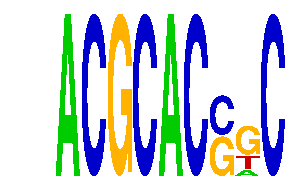

family_5 |
|---|
|  |
| Download PWM |
| Download instances (motifs) |
| Show motif distribution |
Query_ID | Query_Consensus | Subject_Name | Source_DB | Subject_ID | Length | Orientation | Offset | Divergence | Overlap | Subject_Consensus |
|---|---|---|---|---|---|---|---|---|---|---|
| family_5 | ACGCACSGC | Arnt::Ahr | JASPAR | MA0006.1 | 6 | reverse-complement | -1 | 0.826 | 5 | YGCGTG |
Sequence | Start_position (from start) | Start_position (from end) | Average conservation | Best conservation score | Instance_with_best_CS | Best_Z-score | Instance_with_best_ZS | Strand |
|---|---|---|---|---|---|---|---|---|
| chr7:13619343-13620381 | 864 | 873 | 0.000444444 | 0.002 | ACGCACSKC | 33.82358 | ACGCACSKC | 1 |
| chr4:57857707-57858924 | 469 | 478 | 0.00177778 | 0.004 | ACGCACSKC | 33.82358 | ACGCACSKC | -1 |
| chr4:129011702-129012940 | 814 | 823 | 0.041 | 0.078 | ACGCACGRC | 35.707985 | ACGCACGRC | -1 |
| chr8:123191355-123192363 | 532 | 541 | 0.114222 | 0.143 | ACGCACSGC | 33.82358 | ACGCACSKC | 1 |
| chr12:101424857-101425877 | 19 | 28 | 0.109556 | 0.273 | ACGCACSKC | 33.82358 | ACGCACSKC | 1 |
| chr1:88423583-88425608 | 1283 | 1292 | 0.902111 | 1 | ACGCACSGC | 33.82358 | ACGCACSKC | -1 |
| chr6:88468158-88469633 | 986 | 995 | 0.0278889 | 0.033 | ACGCACGRC | 35.707985 | ACGCACGRC | 1 |
| chr7:13495307-13496323 | 674 | 683 | 0.0412222 | 0.079 | ACGCACSKC | 33.82358 | ACGCACSKC | 1 |
| chr15:76803988-76805024 | 130 | 139 | 0.0251111 | 0.051 | ACGCACSKC | 32.700596 | ACGCACGKC | -1 |
| chr5:124990030-124991971 | 663 | 672 | 0.851889 | 0.997 | ACGCACGKC | 47.737553 | ACGCACSGC | -1 |
| chr11:52173862-52175611 | 477 | 486 | 0.160556 | 0.188 | ACGCACSKC | 32.700596 | ACGCACGKC | 1 |
| chr1:88338466-88339926 | 551 | 560 | 0.001 | 0.002 | ACGCACSGC | 33.82358 | ACGCACSKC | -1 |
| chr4:108505365-108507893 | 864 | 873 | 0.0431111 | 0.182 | ACGCACGRC | 32.700596 | ACGCACGKC | 1 |
| chr11:70482169-70483734 | 636 | 645 | 0.991556 | 1 | ACGCACSKC | 47.737553 | ACGCACSGC | -1 |
| chr17:69190490-69191518 | 665 | 674 | 0.203 | 0.918 | ACGCACSGC | 33.82358 | ACGCACSKC | 1 |
| chr11:49525379-49526413 | 140 | 149 | 0.0183333 | 0.036 | ACGCACSKC | 33.82358 | ACGCACSKC | -1 |
| chr19:9041498-9042524 | 64 | 73 | 0.961889 | 1 | ACGCACGRC | 35.707985 | ACGCACGRC | -1 |
| chr2:174155384-174156774 | 530 | 539 | 0.999667 | 1 | ACGCACSGC | 33.82358 | ACGCACSKC | 1 |
| chr7:149573128-149574185 | 780 | 789 | 0.00777778 | 0.02 | ACGCACGKC | 35.707985 | ACGCACGRC | 1 |
| chr17:66449054-66451218 | 1844 | 1853 | 0.00133333 | 0.004 | ACGCACSGC | 32.700596 | ACGCACGKC | 1 |
| chr13:55614162-55615167 | 247 | 256 | 0.00155556 | 0.005 | ACGCACGKC | 47.737553 | ACGCACSGC | 1 |
| chr2:157971512-157972579 | 815 | 824 | 0.000666667 | 0.002 | ACGCACSKC | 33.82358 | ACGCACSKC | 1 |
| chr15:79376364-79377378 | 658 | 667 | 0.726444 | 1 | ACGCACSGC | 32.700596 | ACGCACGKC | 1 |
| chr7:4744210-4745238 | 178 | 187 | 0.00333333 | 0.01 | ACGCACSKC | 47.737553 | ACGCACSGC | 1 |
| chr7:125272387-125273459 | 436 | 445 | 0.00222222 | 0.004 | ACGCACGKC | 33.82358 | ACGCACSKC | 1 |
| chr6:124763219-124764255 | 956 | 965 | 0.437444 | 0.493 | ACGCACSGC | 32.700596 | ACGCACGKC | 1 |
| chr5:116009139-116010658 | 692 | 701 | 0.999778 | 1 | ACGCACSKC | 47.737553 | ACGCACSGC | 1 |
| chr10:79611353-79613900 | 105 | 114 | 0.00844444 | 0.02 | ACGCACGKC | 35.707985 | ACGCACGRC | 1 |
| chr10:20032370-20033422 | 559 | 568 | 0.00766667 | 0.017 | ACGCACGRC | 35.707985 | ACGCACGRC | -1 |
| chr10:79450949-79452099 | 568 | 577 | 0.000888889 | 0.004 | ACGCACGRC | 35.707985 | ACGCACGRC | 1 |
| chr12:113145246-113147107 | 495 | 504 | 0.000111111 | 0.001 | ACGCACGKC | 47.737553 | ACGCACSGC | 1 |
| chr11:6191236-6192774 | 1024 | 1033 | 0.006 | 0.014 | ACGCACSGC | 33.82358 | ACGCACSKC | 1 |
| chr7:29746304-29747652 | 1117 | 1126 | 0.00155556 | 0.004 | ACGCACSKC | 33.82358 | ACGCACSKC | 1 |
| chr13:58229014-58230067 | 933 | 942 | 0.998444 | 1 | ACGCACSGC | 33.82358 | ACGCACSKC | -1 |
| chr14:21521620-21523080 | 636 | 645 | 0.622667 | 0.966 | ACGCACGRC | 32.700596 | ACGCACGKC | 1 |
| chr3:130432103-130433466 | 998 | 1007 | 0.00111111 | 0.003 | ACGCACSKC | 33.82358 | ACGCACSKC | 1 |